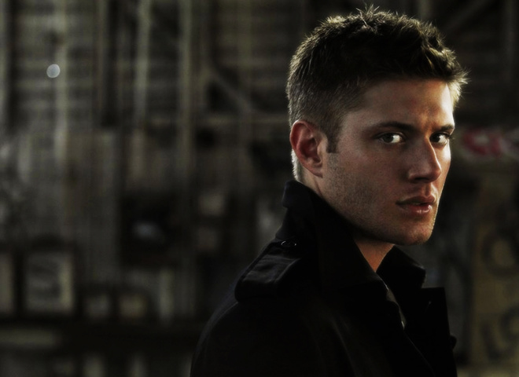

.jpeg)
.jpeg)
Дженсен Еклз народився 1 березня 1978 року в Далласі (штат Техас, США) в родині актора Алана Роджера Еклза й Донни Джоан Шеффер.
Батьки назвали сина Дженсеном, адже вважали це ім'я рідкісним.
У Дженсена є старший брат Джошуа (нар. 1975) й молодша сестра Маккензі (нар. 1985). Має ірландські, англійські й шотландські корені.
У 1990 році Дженсен Еклз закінчив початкову школу Дартмут у Річардсоні (Техас), потім він перейшов до середньої школи Аполло, яку закінчив 1993 року, а закінчив він середню освіту в школі Беркнера 1996 року. Після закінчення школи Дженсен планував вивчати спортивну медицину та збирався вступати до Техаського університету на фізіотерапевта, але потім вирішив стати актором і переїхав до Лос-Анджелеса.
15 травня 2010, після трирічних стосунків, одружився з актрисою Денніл Гарріс (англ. Danneel Harris). 8 січня 2013 року стало відомо, що Денніл вагітна. В них народилася донька, котру назвали Джастіс. 10 серпня 2016 пара повідомила, що наприкінці року вони очікують двійню — хлопчика та дівчинку. 2 грудня 2016 у них народились близнюки. Хлопчика назвали Зеппелін Брем, а дівчинку — Ерроу Родс. Денніл Еклз — також акторка; зокрема вона зіграла ангелицю Анаель у п'ятьох епізодах серіалу «Надприродне» у 2018—2020 роках. Подружжя з дітьми проживає в Остіні, штат Техас, по-сусідству з родиною найкращого друга Дженсена — партнера по «Надприродному» Джареда Падалекі та його дружини Женев'єв (також колишньою акторкою серіалу).
«Я вважаю, що це наш людський обов'язок – допомагати іншим, якщо є така можливість.»
Ще в дитинстві Дженсен Еклз знявся в рекламі дитячих товарів, а його власне акторська кар'єра розпочалася 1996 року, коли він з'явився в епізодичних ролях у таких телесеріалах, як «Містер Роудс», «Школа в Ласкавій долині» і «Сібілл». У 1997 році він дістав роль Еріка Брейді в серіалі телеканалу NBC «Дні нашого життя». У 2000 році Дженсен пішов із серіалу «Дні нашого життя», щоб знятися в мінісеріалі «Блондинка», що розповідає про життя Мерилін Монро. Він також проходив відбір на роль Кларка Кента в серіалі «Таємниці Смолвіля», проте цю роль дістав Том Веллінг. У 2001 році Дженсен знявся в телесеріалі Джеймса Камерона «Темний ангел» (телеканал Fox) в епізодичній ролі Бена / Х5-493, психопата й серійного вбивці, «брата» головної героїні Макс / Х5-452 (у виконанні Джесіки Альби). Його персонаж гине, але Дженсен повертається в другому сезоні в ролі близнюка Бена — Алека / Х5-494 і залишається в серіалі до його скасування 2002 року.
2003 рік став для Дженсена плідним. Він приєднався до акторського складу популярного серіалу телеканалу WB «Затока Доусона», де зіграв роль Сі Джея, коханого Джен Ліндлі. Після цього Дженсен знявся в декількох епізодах не вийшовшого в ефір телесеріалу «Спокійне життя» телеканалу Fox перед тим, як знімання того несподівано припинили. Він також знявся в невеликій ролі в короткометражному фільмі 2004 року «The Plight of Clownana». Еклзу пропонували роль коханого героїні Елайзи Душку в другому сезоні серіалу «Поклик Тру» («Повернути з мертвих»), але 2004 року він повернувся до Ванкувера (де проходили зйомки «Темного ангела»), щоб зіграти роль Джейсона Тіга, коханого Лани Ленг (у виконанні Крістін Кройк) у телесеріалі «Таємниці Смолвіля».
У 2005 році Дженсен зіграв головну роль у фільмі «Пожирач душ» разом зі своїм батьком. У 2005 році Дженсен Еклз дістав знакову для себе роль Діна Вінчестера в культовому містичному серіалі «Надприродне» виробництва компанії «Warner Brothers», в якому також у головній ролі знявся Джаред Падалекі. Дженсен був затверджений на роль Прістлі в фільмі «Десятидюймовий герой» 2007 року. У червні 2007 року Дженсен виступив на сцені театру Casa Mañana (Техас) разом з Лу Даймонд Філліпс у виставі «Кілька хороших хлопців». Він зіграв роль лейтенанта Деніела Кеффі, якого виконав Том Круз в кіноверсії цієї постановки в 1992 році. Це був перший досвід Еклза на театральній сцені. У 2009 році знявся в фільмі «Мій кривавий Валентин»[en], де зіграв головну роль маніяка психопата Тома. У 2010 році відбувся режисерський дебют Дженсена: він зняв 4-й епізод 6 сезону серіалу «Надприродне» — «Вихідні у Боббі» (Weekend at Bobby). Усього протягом 2010—2019 років Еклз став режисером шести епізодів серіалу. У серпні 2020 року стало відомо, що Дженсен приєднається до акторського складу 3-го сезону телесеріалу «Хлопаки» як Soldier Boy. У 2022 році працює над пост-продакшном нового телесеріалу «Вінчестери», приквелу «Надприродного».
© Вся інформація захищена авторським правом 2023.